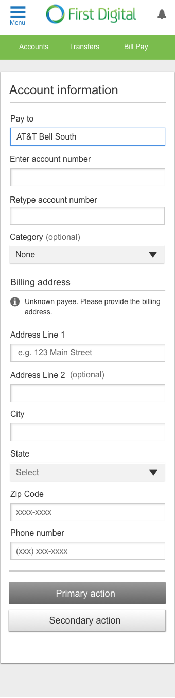
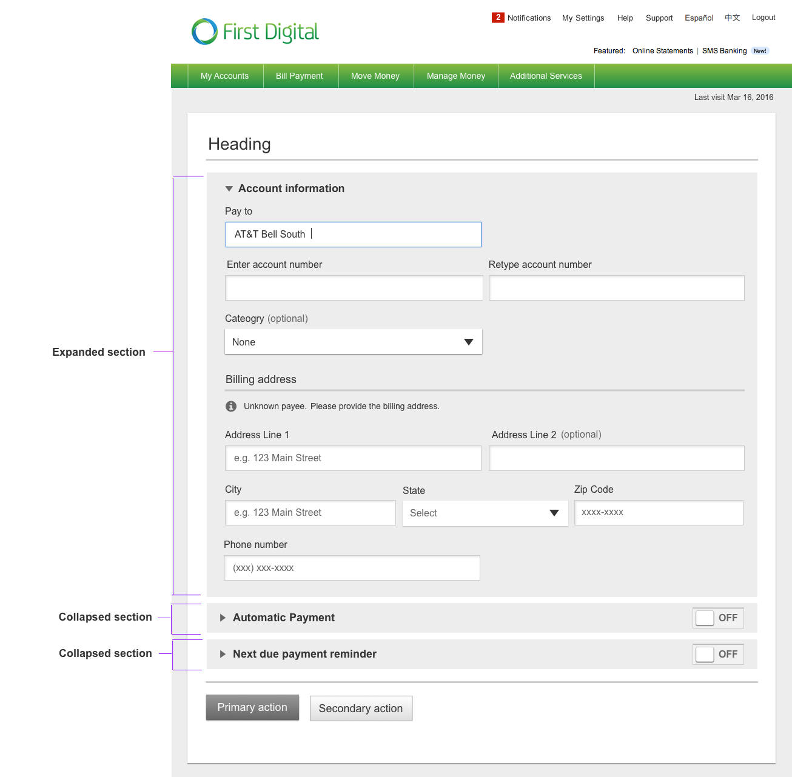

Forms
The guidelines listed below are best practices for creating forms. They are not hard and fast rules, as each form may need to adapt a unique design.
Examples:
Complex form XS

Complex form example S, M, L

Grouping Information
Information can be grouped using the following: Gray call-outs defined by the call-out component or by using 3px or 1px lines to separate the content. Please note that in simple forms at the XS breakpoint the pattern is that call-outs no longer show, so that max horizontal space can be preserved. If necessary, grouping can still be accomplished with line separators.
Input Field widths
- Align fields to be the same widths whenever possible to make scanning easy for the user.
- Fields widths in responsive design are typically defined by the number of columns or percentage of page width.
- As the screen size reduces, the fields should wrap to the next line.
Using placeholder information versus labels in fields
We use placeholder information to help give the user an idea of the format expected inside any given field. As soon as the user starts typing in the field, the placeholder information disappears. For this reason we do not rely on the placeholder information to help the user understand the information required in the field; the field label should provide that key information to the user.
Form Controls
Information on individual form controls can be found in the UI Elements section of the guide.
However, please note controls are designed to work with finger sizes on touch devices and, as a general rule, those controls do NOT change size by breakpoint.
The only reason to use the smaller size of controls is to save space in a complex form.
Fonts
It is not recommended to change fonts sizes at different breakpoints in the design. The single exception is the main header on a page. This, however, is at the discretion of the designer. If there are changes to font sizes by breakpoint, typically the font size will increase to the next standard size. See Typography by Resolution for more information.
Expand and collapse of sections
Complex forms can collapse information so that the user can focus on one section at a time. At the XS breakpoint it may be necessary to break the groupings into separate pages so that the user is not overwhelmed by the requested information. Only one grouping should be expanded at any time. If the user selects another grouping, the previous section should automatically collapse.
Additionally, infrequently used information or help information can also use an expand and collapse pattern.
Masking information:
Sensitive information is masked (or partially masked) using multiple letter x (e.g. xxx).
Language translation
Make sure the design will work with text of varying lengths. For example, Spanish text often takes up much more space than the same information does in English. In order to accommodate such variances by language:
- Place labels above fields at XS breakpoints (at larger breakpoints labels can be above OR to the right of the field, depending on space constrictions)
- Make sure text will wrap as the screen width reduces
- Define button width as “text” and add 20px of padding on the left and right
Icons
Icons take the financial institution’s branding color unless the designer specifically states that the icon should take one of the fixed colors of #666666 or #333333. This depends on page hierarchy and how much attention the designer wants to bring the information the icon is conveying.
Accessibility:
When designing a form it is necessary to indicate the tabbing order of fields and information for screen readers to assist people with low or no vision.